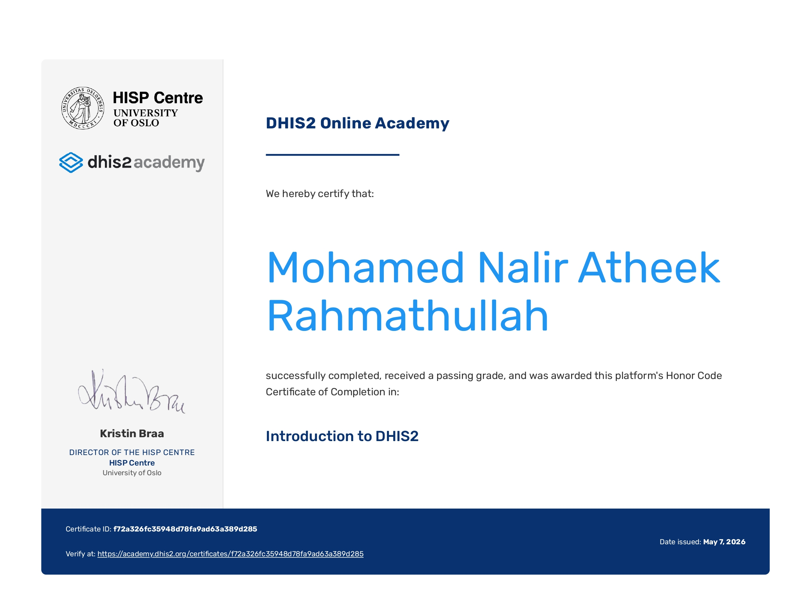

Hi, I'm
Atheek
Rahmathullah
Health Promotion Undergraduate|Community Health Facilitator|Public Health Research Enthusiast
Experienced in leadership, volunteer engagement, health communication, and community outreach initiatives. Committed to improving population health outcomes through research, and sustainable public health practices.
About Me
Professional BackgroundI am a Health Promotion undergraduate at Rajarata University of Sri Lanka with a growing focus on community health, health promotion, and public health research. Through academic training, field-based experiences, and community engagement initiatives, I have contributed to health promotion activities, outreach programs, and evidence-based public health efforts. My interests include community health assessment, health communication, program planning, and research-informed interventions. I am committed to supporting initiatives that promote healthier communities and sustainable public health outcomes through collaboration, leadership, and continuous learning.
Experience
Certifications
Activities
Skills
Professional capabilitiesPublic Health Skills
More than 2 yearsCommunity Engagement
AdvancedHealth Communication
AdvancedHealth Advocacy
ProficientCommunity Needs Assessment
ProficientProfessional Skills
More than 3 yearsLeadership
ProficientTeamwork
AdvancedEvent Coordination
IntermediatePublic Speaking
AdvancedCore Competencies
Professional strengths and capabilitiesQualification
My personal journeyBachelor of Science in Health Promotion (Hons)
Rajarata University of Sri LankaG.C.E Advanced Level Examination - Biological Science Stream
P/President’s Science CollegeG.C.E Ordinary Level Examination
P/Zahira College (national school)Official Videographer and Content Writer
InFocus, Official Media Unit, Rajarata University of Sri LankaMember
Gavel Club of Rajarata University of Sri LankaMember
Zero Plastic Club of Rajarata University of Sri LankaMember
Rotaract Club of Rajarata University of Sri LankaMember
Health Promotion Society, Faculty of Applied Sciences, Rajarata University of Sri LankaAreas of Expertise
What I contributeCommunity Health Assessment
Health Promotion
Public Health Research
Professional Qualifications
Certifications & Professional Development
DHIS2 Introduction
DHIS2 Online AcademyDigital health information systems, health data management, reporting and analytics.
Professional Profile
How I approach work and growthINFJ-T Advocate
Purpose-driven, empathetic, and strategic thinker committed to improving community well-being through public health initiatives, research, and meaningful engagement.
Personality
Purpose-driven and people-centered, focused on creating meaningful and sustainable impact.
Professional Approach
Strategic and research-oriented, combining analytical thinking with evidence-based decision making.
Core Strengths
Empathy, leadership, communication, teamwork, and community engagement.
Growth Philosophy
Dedicated to continuous learning, professional development, and lifelong improvement.
Professional Traits
Professional Development
Courses • Certifications • TrainingDHIS2 Introduction
DHIS2 Online AcademyCompleted training on digital health information systems, health data management, reporting, and analytics.
Health Promotion Training
Academic & Community ProgramsParticipated in health awareness, community outreach, and health education initiatives.
Research Methodology
Undergraduate TrainingDeveloped skills in research design, data collection, analysis, and reporting.
Leadership & Public Speaking
Gavel Club ActivitiesEnhanced communication, presentation, leadership, and teamwork abilities.
Experience & Community Projects
Practical learning through community engagementCommunity Health Promotion Project
2024 – PresentImplemented community-based health promotion activities aimed at improving awareness and encouraging healthy lifestyle practices.
- Conducted community health assessments
- Implemented awareness campaigns
- Supported health education activities
- Facilitated intervention planning
University Outreach Activities
Rajarata UniversityEngaged in community outreach and public health awareness programs through academic initiatives.
- Volunteer coordination
- Community engagement
- Public awareness programs
- Health communication activities
Media & Communication Experience
InFocus Media UnitContributed to media production and communication activities supporting university events and programs.
- Photography & videography
- Content creation
- Event documentation
- Social media communication
Achievements
Milestones and accomplishmentsDHIS2 Certified
Successfully completed the Introduction to DHIS2 course, gaining knowledge in digital health information systems, data management, and health analytics.
Public Speaking & Leadership
Developed communication, presentation, and leadership skills through active participation in Gavel Club activities and events.
Media & Content Creation
Contributed as a videographer and content creator supporting university programs, events, and community initiatives.
Community Health Projects
Participated in health promotion activities, awareness campaigns, and community-based public health initiatives.
Volunteer Engagement
Actively involved in volunteer programs and collaborative initiatives focused on community wellbeing and social impact.
Research Participation
Engaged in academic research activities involving data collection, analysis, reporting, and evidence-based learning.
SWOT Analysis
Self-reflection for continuous growth and developmentStrengths
- Strong communication skills
- Leadership and teamwork abilities
- Community engagement experience
- Research-oriented mindset
- Adaptability and problem solving
Areas for Growth
- Building advanced statistical skills
- Expanding professional field exposure
- Enhancing advanced research techniques
- Developing project management expertise
Opportunities
- Public health research initiatives
- International health programs
- NGO and community partnerships
- Digital health innovation projects
- Leadership development opportunities
Challenges
- Highly competitive professional landscape
- Rapid technological advancements
- Evolving healthcare priorities
- Growing demand for specialized expertise
Professional Values
Principles that guide my professional journeyI believe in serving communities with compassion, acting with integrity, fostering collaboration, and embracing continuous learning. These values shape my approach to public health, leadership, research, and community development.
Career Vision
Where I aspire to make a meaningful impactAdvancing Community Wellbeing Through Public Health Leadership
My long-term goal is to contribute to public health through research, community engagement, health promotion, and evidence-based interventions. I aspire to work with public health organizations, NGOs, and research institutions to improve population health outcomes and create sustainable positive change within communities.